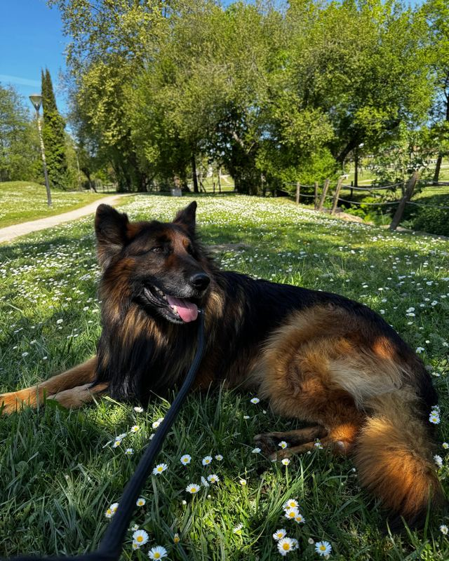
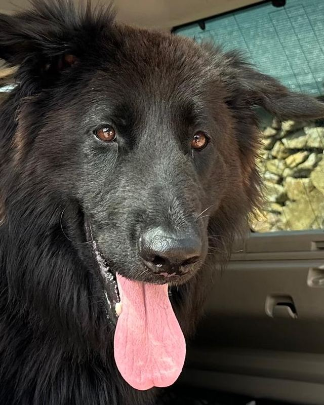
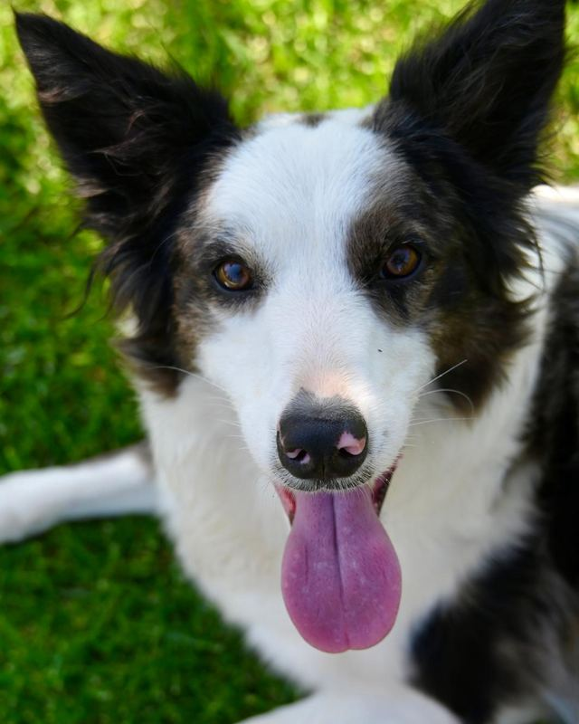
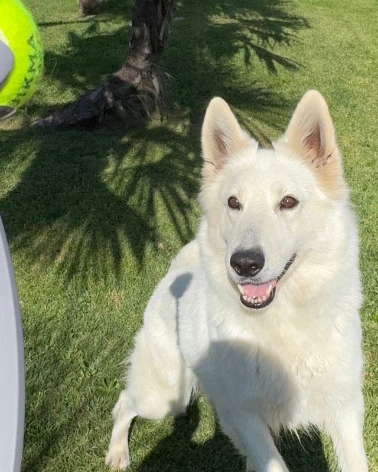
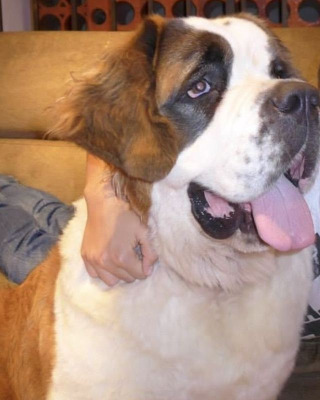

−10 € em cada um dos 3 primeiros banhos, para os primeiros 30 clientes
Banho de cão com recolha em Paços de Ferreira
Vamos buscar o seu cão a casa, damos-lhe banho e secagem e entregamo-lo no mesmo dia. Também em Paredes e Lousada.

Como funciona a recolha
- 1. Diga-nos a raça e a zona
Respondemos normalmente em menos de duas horas, com preço e hora de recolha.
- 2. Recolhemos em casa
O cão viaja sozinho, numa transportadora fixa ao carro. Recebe uma fotografia à chegada.
- 3. Entregamos no mesmo dia
Limpo e seco, com uma nota sobre pele, ouvidos e unhas.

Quem dá o banho
O Cãochopadre é a Beny e a quinta onde vivemos com seis cães. Cada banho é dela, do princípio ao fim, um cão de cada vez e ao ritmo dele. Nunca sedamos nem forçamos.
Dois banhos, recolha incluída
Fazemos só banho, secagem e cuidado do pelo. Sem tosquia.
- Essencial
Banho completo, secagem à mão, escovagem e unhas. Cerca de 1h30.
desde 40 € - Premium
O Essencial com máscara ou tratamento de pele e remoção de subpelo. 2h a 2h30.
desde 50 €

Preços por porte
Nos 3 primeiros banhos paga menos 10 €. Pelo muito embaraçado pode levar suplemento, combinado antes.
- Banho Essencial
Recolha e entrega incluídas.
- Cão pequeno, até 10 kg40 €
- Cão médio, de 10 a 25 kg50 €
- Cão grande, mais de 25 kg60 €
- Champô profissional para o tipo de pelo
- Condicionador e desembaraçante
- Secagem à mão, sem jaula de secagem
- Escovagem e remoção de pelo morto
- Ouvidos e olhos limpos, unhas cortadas
- Banho Premium
Tudo o que o Essencial inclui, mais o que está em baixo.
- Cão pequeno, até 10 kg50 €
- Cão médio, de 10 a 25 kg60 €
- Cão grande, mais de 25 kg75 €
- Máscara hidratante ou tratamento de pele
- Remoção de subpelo, na época da muda
- Nós desfeitos com paciência
- Perfume suave e laço ou bandana
Os cães da quinta
Foi neles que afinámos cada passo do banho, antes de abrirmos a marcações.


Perguntas frequentes
Onde fazem recolhas?
Em Paços de Ferreira, Paredes e Lousada, sem custo. Em Penafiel, Valongo e Santo Tirso, com pequeno suplemento.
Quanto tempo fica o cão convosco?
Entre 2 e 4 horas, transporte incluído. Damos a estimativa antes da recolha.
O meu cão é ansioso. Conseguem?
Quase sempre. Trabalhamos devagar e, se ele não estiver confortável, paramos e falamos consigo.
Como se paga?
Na entrega, com MB Way, cartão ou dinheiro.
E se não gostar do resultado?
Diga-nos na entrega e corrigimos de imediato, ou repetimos nos dias seguintes sem custo.